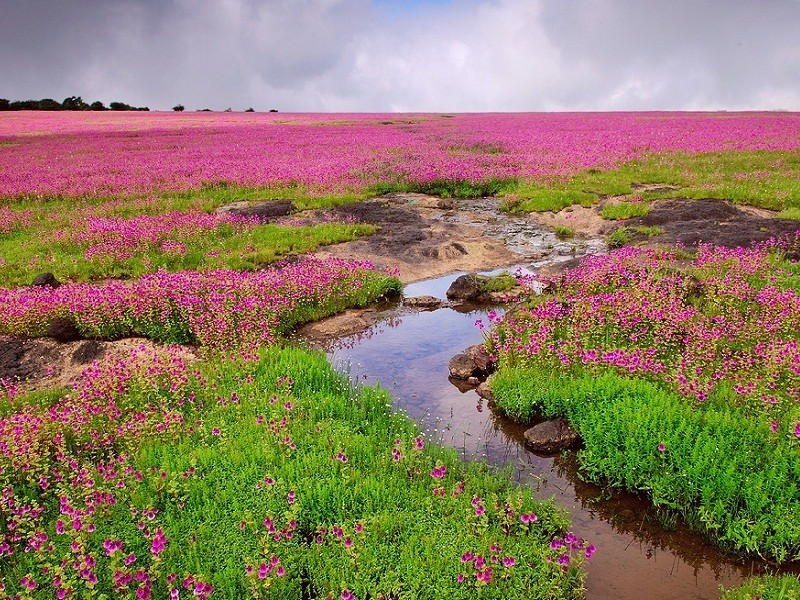

Satara is a place of great history and culture located on Sahyadri hills. It was capital of Maratha Kingdom spreaded over 14 lac sq.mtrs. This land has rich heritage- several Kings, Warriors, Saints and great personalities create their historical evidence in the history of India. Famous personalities of Satara are - Samarth Ramdas, Chatrapati Shivaji Maharaj, Shrimant Chatrapati Pratapsingh Maharaj, Zanshichi Rani Laxmibai, Krantisingh Nana Patil, Dr. Karmaveer Bhaurao Patil, Mahatma Phule, Savitribai Phule, Swararaj Chota Gandharva, Dhanji Cooper. Geographical Location- North latitude, 17.5 to 18.1, East latitude- 73.33 to 74.54. Climate- Mini. Temp.- 11.6oC and Max. Temp.- 37.5oC. Rainfall- 1426 mm (Avg.) Tourist Sites- Ajinkyatara Fort, Char Bhinti Hutatma Smarak, Natraj Mandir, Sajjangad- Spiritual capital of Maratha Kingdom, Sangam Mahuli, Thoseghar waterfall, Koyna dam, Kanher dam, Dhoom dam, Kuraneshwar Ganapati, Yevateshwar Temple, Shikhar Shinganapur, Shivaji Museum, Kas Talav, Mini Kashmir - Mahabaleshwar, Panchgani, Pratapghad. Satara is well connected by Rail & Road.
